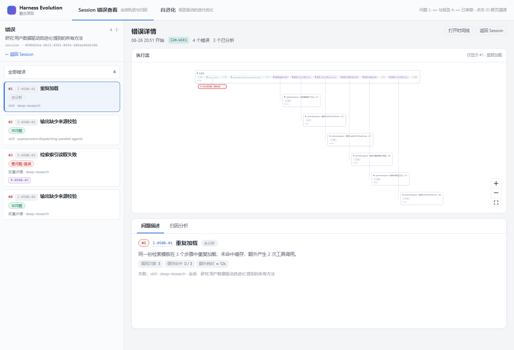
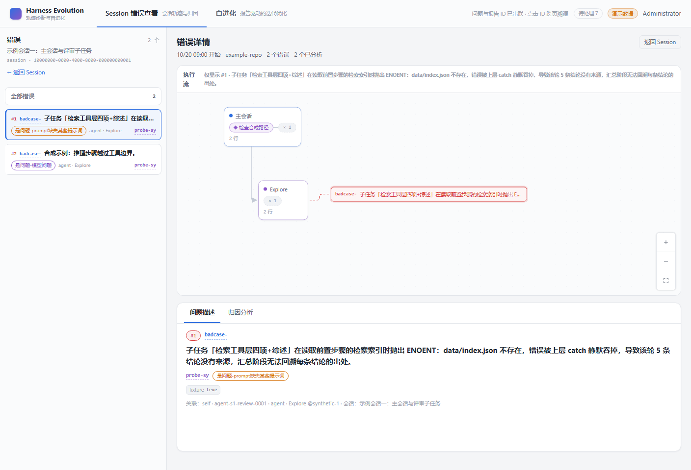
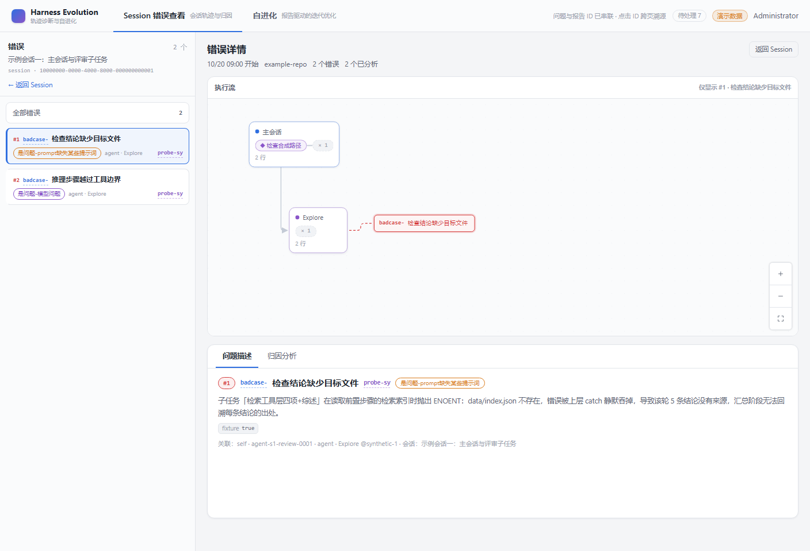
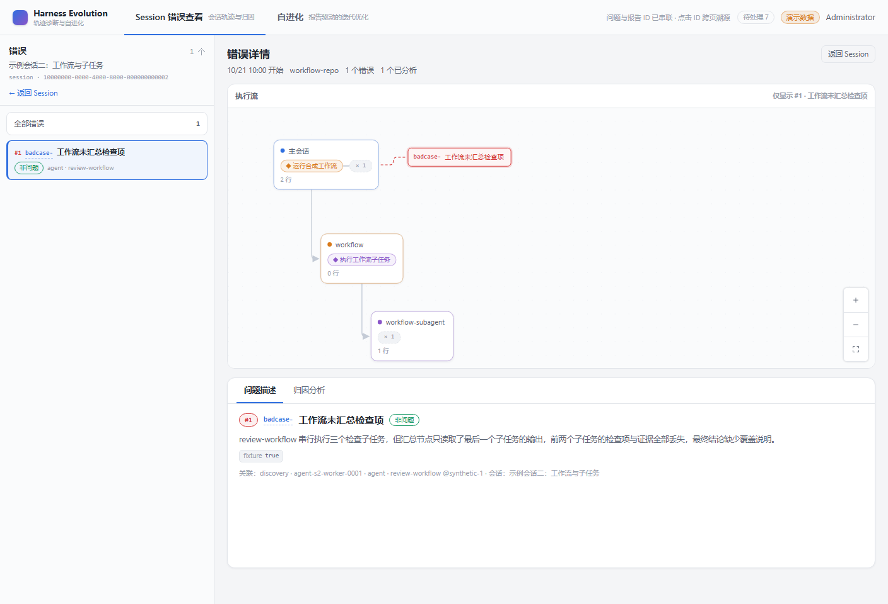
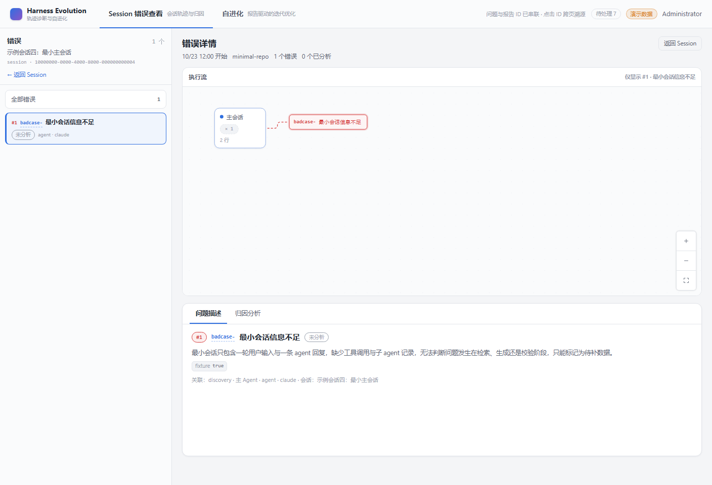
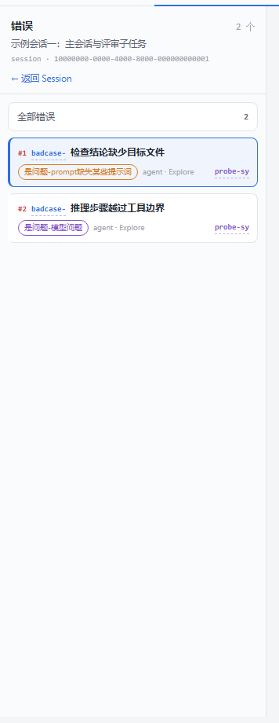
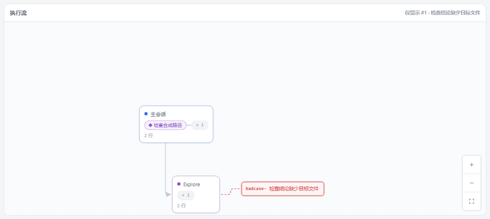

- Issue
- Shadow-Azure/harness-evolution#165
- 分支 / 基线
- feat/165-bad-case-title ← main@f37010d
- 后端
- FastAPI + SQLite（临时 HE_DATA_DIR，fixtures m2-synthetic 演示数据）
- 前端
- Vite dev server + Vue 3，1408×960 与 390×844
- 数据形态
- seed 后在临时库把 3 条问题的描述改成真实长描述（不改仓库文件）
- 证据脚本
- reports/2026-10-29/issue-165-bad-case-title/collect-before.mjs / collect-smoke.mjs
Harness Evolution · 错误详情页
issue #165 冒烟测试：bad_cases 短标题 + 描述正文
在真实前后端（FastAPI + Vite + SQLite 临时数据目录）上验证 bad_cases 短标题 title 与描述正文 reason 的两级渲染：错误详情页标题行显示短标题、正文块显示完整描述；问题列表卡与执行流图问题卡主文本为短标题；未分析 / 非问题 / 是问题三种状态与 390px 窄屏均通过，浏览器 console 无异常。
9冒烟断言场景
3归因状态覆盖
2视口宽度（1408 / 390）
0console 异常
Environment and Artifact
2026-10-29 · 分支 feat/165-bad-case-title · 工作区未提交版本 · Windows 11 / Chrome 155 / Node 22.19 / Python 3.12Scenario Matrix
9 pass| # | 场景 | 结果 | 说明 | 证据 |
|---|---|---|---|---|
| 01 | API 契约：bad-cases 与 session tree 带 title | PASS | 三个演示会话共 4 条问题，items[].title 与 tree.badCases[].title 均非空；reason 仍是完整描述正文。 | assertions.json |
| 02 | 错误详情 · 是问题（analyzed_issue / prompt） | PASS | 标题行 =「检查结论缺少目标文件」，正文块 = 长描述全文，二级文本不重复。 | 05-after-error-detail-issue.png |
| 03 | 错误详情 · 非问题（analyzed_nonissue） | PASS | 标题行 =「工作流未汇总检查项」，正文块 = 长描述全文。 | 06-after-error-detail-nonissue.png |
| 04 | 错误详情 · 未分析（unanalyzed） | PASS | 标题行 =「最小会话信息不足」，正文块 = 长描述全文；未分析态不再只有占位文案。 | 07-after-error-detail-unanalyzed.png |
| 05 | 问题列表卡主文本为短标题 | PASS | 左栏卡片标题来自 title；长描述不再进入卡片主文本。 | 08-after-problem-list.png |
| 06 | 执行流图问题卡主文本为短标题 | PASS | 图上卡片文本 =「检查结论缺少目标文件」，卡片宽度仍在 150–400px 钳制内。 | 09-after-graph-card.png |
| 07 | 执行流说明行使用短标题 | PASS | 「仅显示 #1 · 检查结论缺少目标文件」；修复前同一位置是整段长描述。 | 05-after-error-detail-issue.png |
| 08 | 390px 窄屏两级文本同时可见 | PASS | 详情面板滚入视口后标题行与正文块同时可见，无横向溢出。 | 10-after-390.png |
| 09 | 浏览器 console 无 error / warning | PASS | 整轮冒烟（含页面刷新、三态切换、窄屏切换）无 console error、无未捕获异常。 | assertions.json |
Issues and Observations
No defects foundNo defects were found.
Evidence
10 screenshots






Automated Coverage Assessment
4 areas reviewed| 范围 | 自动化覆盖 | 结论 | 建议 |
|---|---|---|---|
| DB 迁移 0010（reason→bad_case_description、title 回填、NOT NULL） | pytest test_database.py -k bad_case_title（SQLite 真实迁移链 + downgrade） | 升级/降级均按设计执行，存量行回填非空标题。 | MySQL 8 lane 由 CI 执行（本机无 3306 实例）。 |
| 契约与读模型（title/degraded/派生标题） | pytest m4-01 / m4-02 / m2-06 / test_openapi；契约 contract:check | BadCase 与 SessionBadCase 均 required title；缺 title 时用描述首句派生并标记 degraded。 | 保持契约再生的 CI 门禁。 |
| Web 两级渲染与卡片主文本 | vitest ProblemDescription / Index / BadCaseList / BadCaseNode / layout | 三种归因状态、degraded、卡宽钳制都有确定性断言。 | 保留本冒烟作为真实浏览器回归证据。 |
| 窄屏与 console | 真实 Chrome 1408 / 390 冒烟 | 两级文本在窄屏同时可见，console 干净。 | 后续改错误详情页布局时重跑 collect-smoke.mjs。 |
Conclusion
全部冒烟场景通过issue #165 的两级文本在真实前后端与三种归因状态下成立；列表卡、执行流图问题卡、执行流说明行均以短标题为主文本；窄屏与 console 无异常。
- Windows 本地脚本门禁（verify:docs / verify:flow / lint:docs）因 #163（m6-11）的 import.meta.url 守卫在 Windows 下假绿，本次改用脚本库直跑 + CI 全量校验，见 PR 说明。
- 本机无 MySQL 8 实例，mysql lane 未在本地执行；由 CI 的 mysql job 覆盖。
- e2e 浏览器套件未纳入本次冒烟，真实浏览器证据由本报告与 collect-smoke.mjs 承担。
生成方式：node reports/2026-10-29/issue-165-bad-case-title/collect-smoke.mjs → report-data.json → .agents/skills/computer-use-smoke-reporting/scripts/render-smoke-report.mjs。截图与断言来自同一次冒烟运行。